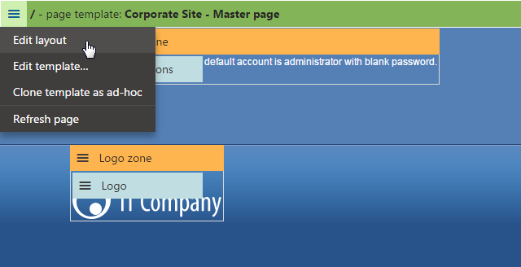
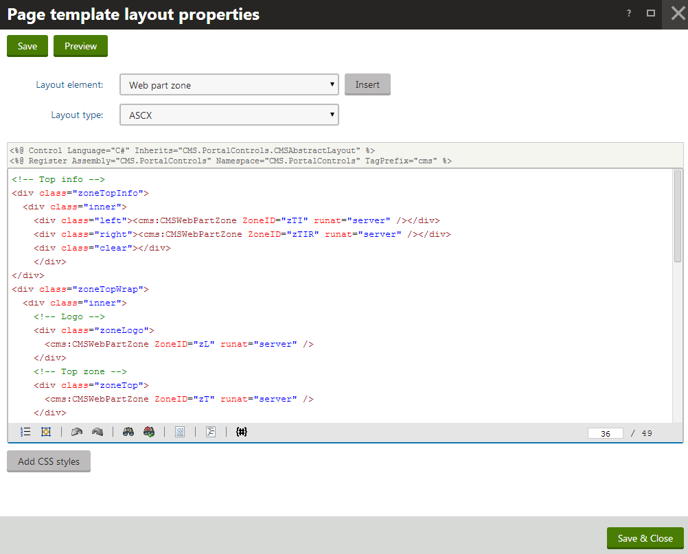
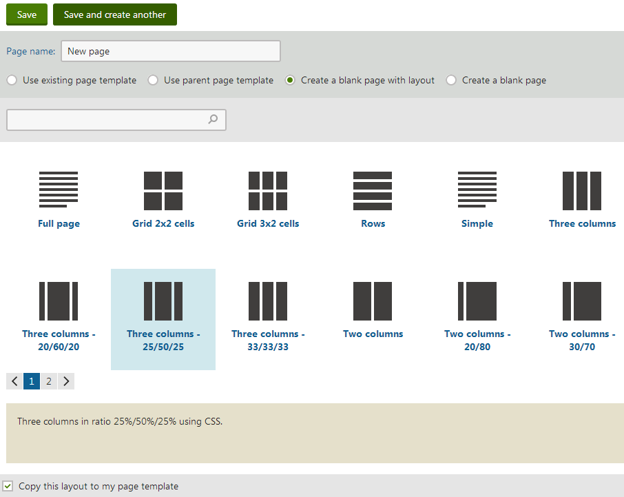

Editing page layouts
The structure of every portal page template is determined by a page layout. Page layouts consist of layout code and web part zones that specify regions where designers can place web parts. Page layouts allow you to define the basic layout and design of your website.
There are two general types of page layouts:
Custom - used only by one specific page template.
Shared - stored as separate objects that you can assign to any number of page templates. Modifying a shared layout affects all templates that use it.
Editing layouts
To edit the layout of a page:
Open the Pages application.
Select the page in the content tree.
Switch to the Design tab.
Right-click the green template header and click Edit layout in the menu.

Opening the layout editing dialog on the Design tabModify the layout code as required.

Note: when removing web part zones from a layout, make sure you remove all the web parts in the zone first.
Editing the code of a page layout
The Layout type selector allows you to choose between two types of layout code:
|
Layout type |
Description |
|
ASCX |
This type of layout code supports both HTML and ASP.NET markup, i.e. the same syntax that you would use to edit a standard web form or user control, including inline code and embedded controls. Important: For security reasons, ASCX layouts may only be edited by users who have the Edit ASCX code permission for the Design module. Only users with the Global administrator privilege level can assign this permission. You can Insert web part zones as control tags: <cms:CMSWebPartZone ZoneID="zoneA" runat="server" />The ZoneID value must be unique for every web part zone within the given layout. |
|
HTML |
The system processes the layout code as basic HTML. ASP.NET markup, such as controls or inline code, is not supported. HTML layouts do not require compilation, which brings the following benefits:
Insert web part zones into HTML layouts through the following expressions: {^WebPartZone|(id)zoneA^}The value of the id parameter must be unique for every web part zone within the given layout. If you need to insert dynamic values into HTML layouts, use Kentico macro expressions. |
Previewing layouts
You can preview page layouts by clicking Preview in the header of their editing dialog. You can then write the layout code side-by-side with a preview of how the changes affect the live site version of the page.
See also: Previewing design changes
Removing web part zones from page layouts
Removing layouts
Example - Layout code
Page layouts are composed of standard HTML elements, which means you have full control over how the system renders the page. You can choose between table and CSS‑based layouts.
The following sample page layout uses a table to define a two-column structure:
<table> <tr> <td> <cms:CMSWebPartZone ZoneID="zoneA" runat="server" /> </td> <td> <cms:CMSWebPartZone ZoneID="zoneB" runat="server" /> </td> </tr></table>The following layout code defines the same two-column structure, but using DIV elements and CSS styles:
<div style="width: 100%;"> <div style="width: 50%; float: left;"> <cms:CMSWebPartZone ID="zoneA" runat="server" /> </div> <div style="width: 50%; float: right;"> <cms:CMSWebPartZone ID="zoneB" runat="server" /> </div></div>Adding CSS styles to layouts
Page layouts allow you to directly define any CSS classes used within the layout code.
Requirement: Enable the Allow CSS from components setting in Settings -> System -> Performance.
Click Add CSS styles below the page layout's code. The CSS styles editor appears.
Enter the definitions of the required CSS classes.
Click Save.
All pages that use the layout automatically load the specified styles (in addition to the website or page‑specific stylesheet).
See also: Adding CSS to page components
Creating conditional layouts
When editing the code of ASCX page layouts, you can Insert Conditional layout elements. This allows you to create flexible layouts that display content based on certain criteria. The page layout renders the content between the CMSConditionalLayout tags only if the conditions specified by the properties are fulfilled.
For example:
<div class="padding"> <cms:CMSConditionalLayout runat="server" id="goldLayout" GroupName="Roles" VisibleForRoles="GoldPartners"> <cms:CMSWebPartZone runat="server" ZoneID="zGold" /> </cms:CMSConditionalLayout> <cms:CMSConditionalLayout runat="server" id="silverLayout" GroupName="Roles" VisibleForRoles="SilverPartners"> <cms:CMSWebPartZone runat="server" ZoneID="zSilver" /> </cms:CMSConditionalLayout> <cms:CMSConditionalLayout runat="server" id="defaultLayout" GroupName="Roles" > <cms:CMSWebPartZone runat="server" ZoneID="zDefault" /> </cms:CMSConditionalLayout></div>This sample layout displays one of three possible web part zones based on the roles of the user viewing the page. Gold partners see the content of the zGold zone, Silver partners see the zSilver zone and all other users see zDefault.
You can configure the following properties for conditional layouts:
|
Property |
Description |
|
GroupName |
Allows you to group conditional layout elements together. When multiple conditional layouts use the same group name, the page only displays the first one (from the top of the code) that has its visibility condition fulfilled. |
|
VisibleForDocumentTypes |
Adds a visibility condition that checks if the current page is of a specific page type. Enter the value as a list of page type code names separated by semicolons. For example: VisibleForDocumentTypes="CMS.MenuItem;CMS.News" |
|
VisibleForRoles |
Adds a visibility condition that checks if the user viewing the page belongs to specific roles. Enter the value as a list of role code names separated by semicolons. For example: VisibleForRoles="MarketingManager;ChatSupportEngineers" Note that users with the 'Global administrator' Privilege level bypass the condition and will always see the first layout. |
|
VisibleForDeviceProfiles |
Adds a visibility condition that checks if the user viewing the page matches a specific device profile. Enter the value as a list of device profile names separated by semicolons. For example: VisibleForDeviceProfiles="iPad;iPhone" |
|
VisibleForDomains |
Adds a visibility condition that checks if the site is being accessed under a specific domain name. Enter the value as a list of domain names separated by semicolons. |
|
ActiveInDesignMode |
If set to true, the conditional layout also evaluates its visibility condition in Design mode. Note: This may prevent you from working with web part zones inside the conditional layout. False by default. |
Creating pages with shared layouts
When creating a new page, you can select the Create a blank page with layout option and choose from a number of predefined page layouts.

Selecting a shared layout for a new page
If you leave the Copy this layout to my page template option at the bottom of the selection dialog checked, the system creates a custom copy of the layout specifically for the page template. Otherwise the template uses the shared layout directly. If you disable the option and then modify the layout code, the changes affect all pages with templates that use the shared page layout. Leave the option enabled unless you wish to create pages with a shared layout that can be edited in one place.
Managing shared page layouts
You can manage the pre-defined (shared) page layouts in the Page layouts application. When editing a layout on the General tab, you can modify its code and also configure the following properties:
|
Property |
Description |
|
Display name |
Name of the layout displayed in the page layout list. |
|
Code name |
A unique name that serves as an identifier for the page layout (e.g. in the API). |
|
Description |
Allows you to enter an optional text description of the page layout. |
|
Thumbnail |
Upload field for the layout preview image. Users see this image in the page layout selection dialog when creating new blank pages. |
|
Is convertible |
If enabled, you can use automatic mapping to assign replacement layouts that the system loads for specific device profiles instead of the current layout. |
|
Number of zones |
Indicates how many web part zones the layout uses. The number of zones helps users find appropriate matches when mapping layouts for device profiles. The system automatically counts the number of zones in the layout code, but you can manually override the value (for example in the case of conditional layouts or layouts that load web part zones dynamically). |
On the Page templates tab, you can check which templates currently use the given layout. Templates with a custom page layout are not included here, even if they were created as a copy based on the currently edited shared layout.
Using layout web parts
You can alternatively define the layout of page templates by adding special web parts designed for this purpose — Layout web parts.
This approach allows you to set up the structure of page templates and add web part zones without writing or editing the page layout code. Simply create a page containing a single zone, add a layout web part, and then configure the required layout via the web part's properties dialog or even directly on the Design tab.